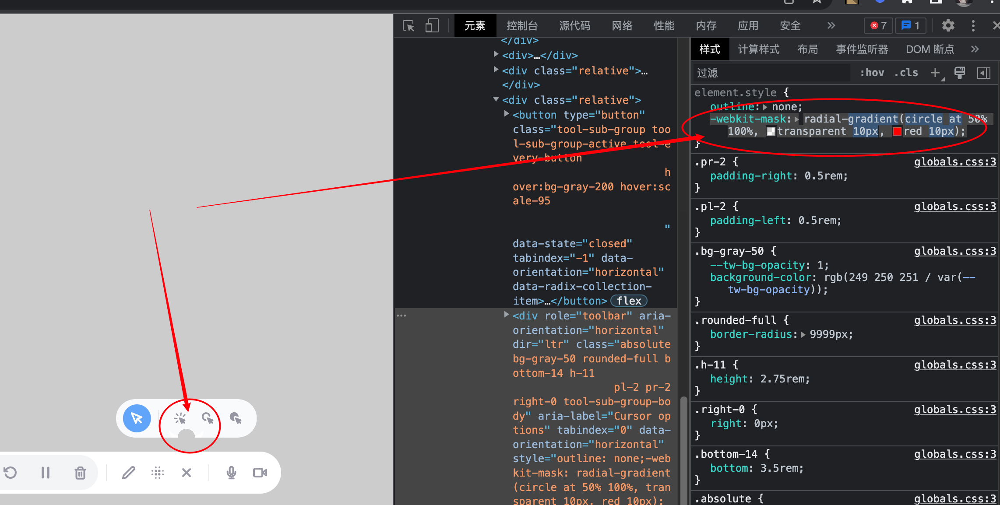

2023-07-20
-webkit-mask
修改于: 2023-07-20WebKit 内核浏览器专有属性, 支持多种效果. 其他相关属性:
-webkit-mask-size: 100%; -webkit-mask-repeat: no-repeat;
直接设置图像 url(path/to/image.jpg)
linear-gradient()
conic-gradient()
- radial-gradient()
CSS 中使用 WebKit 内核浏览器专有属性来实现一种特殊的遮罩效果。 创建一个圆形或椭圆形的遮罩层, 使得元素部分区域可见, 部分区域不可见。
如创建一个圆形的遮罩层, 中心点由 --x 和 --y 变量控制, 中心 50 像素为透明, 之后到边缘为红色
.box{ -webkit-mask: radial-gradient( circle at calc(var(--x, .5) * 100%) calc(var(--y, .5) * 100%), transparent 50px, red 51px ); }
分别的作用
- radial-gradient() 函数创建了一个径向渐变。
- circle 关键字指定了渐变的形状为圆形。
- at calc(var(--x, .5) * 100%) calc(var(--y, .5) * 100%) 部分使用了 CSS 变量 --x 和 --y 来动态设置渐变中心的位置。 如果没有定义这两个变量,则默认值为 0.5 (即 50%)。
- transparent 50px 指定了从中心点开始 50 像素范围内为透明。
- red 51px 指定了从 50 像素开始到边缘为红色。
再比如
-webkit-mask: radial-gradient(circle at 50% 100%, transparent 10px, red 10px); /* 如果没有颜色需要手动设置才有对比 */ background-color: rgb(249 250 251 / 1)
对应的效果
